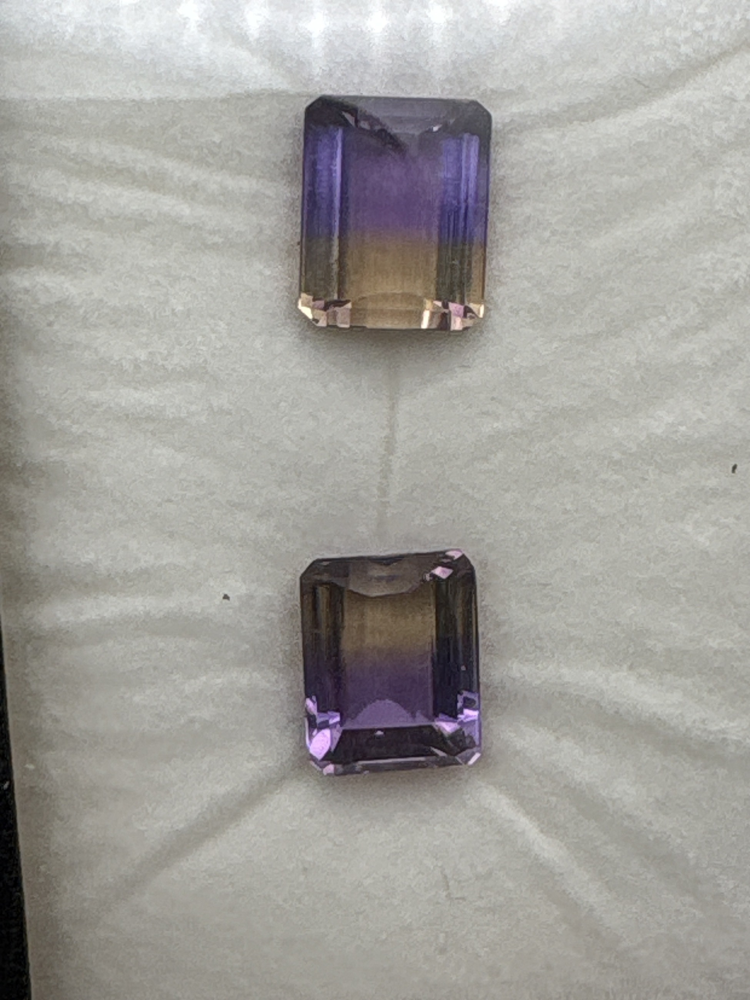

The Gem Drawer › No. 4

Two emerald-cut ametrines with the classic purple-to-gold split, roughly 9 x 12 mm each.
| Catalogue no. | #4 |
|---|---|
| As labeled | Ametrine (MATCHED PAIR - 2 stones in this box, see notes) |
| Shape / cut | Emerald cut ("e/c") |
| Weight | 4 ct |
| Measurements | 9 x 12 (each, presumed) |
| Colour | Purple / smoky yellow bicolor (classic ametrine split) |
| Clarity / condition | Eye-visible inclusions present (see photos); not professionally graded |